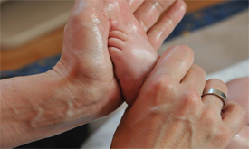

NUCIFERA Extra Virgin Coconut oil(VCO) is chemical & preservative free product which contains anti-viral & anti-microbial properties with contains 50% Lauric Acid as same in mother's milk that enhances our immunity & health.It is unrefined, unbleached and cold pressed.Unlike other coconut oil that is extracted through heat, VCO does not possess that latik odor, but fresh aroma of coconut oil.VCO is rich in fatty acids and anti-oxidants making it ideal for cooking, dietary purposes and skin, hair and baby care.
-
For cooking and dietary vco is one of the healthiest cooking oil with numerous health benefit. It can also Read More...
Cooking and Dietary -
For hair VCO contains vitamin e which is an essential nutrient for healthy skin and hair. It helps nourish Read More...
Skin and Hair -

For baby care VCO's anti fungal, anti viral and anti bacterial properties make it an excellent oil for baby Read More....
Baby care